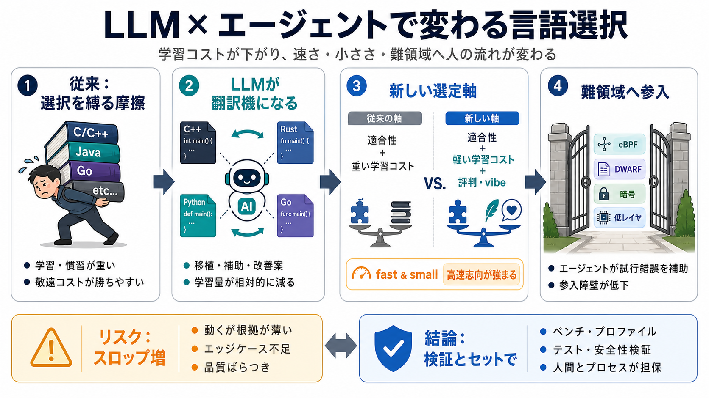

Fast and Hard Code | daily.dev
Armin Ronacher argues that LLMs are reshaping how developers choose programming languages, since agents remove much of t…

Armin Ronacher argues that LLMs are reshaping how developers choose programming languages, since agents remove much of t…
Armin Ronacher's Thoughts and Writings blog archive projects travel talks about # Fast and Hard Code written on…
agents. This is one of the biggest changes in the software industry in a long time. A leading example of this change com…
> “Over the years, many of my projects didn’t go anywhere because the legwork needed to build this bespoke tooling to be…
experience in the industry knowing that there's value in writing a little bit more codes with little bit fewer abstracti…